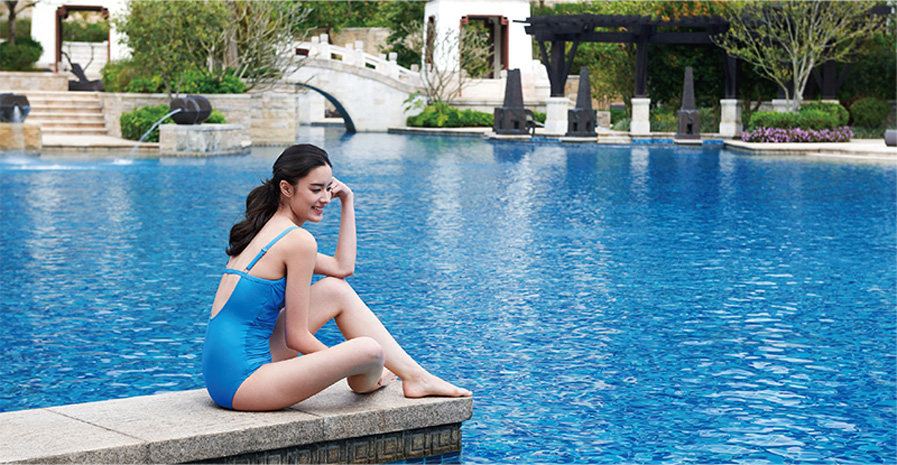

整合干预
-天然荷尔蒙平衡 /
五天四夜
荷尔蒙控制了我们的生命，几乎所有的细胞， 从头到脚，都有荷尔蒙接收器。 德国著名医学博士
埃尔珂·塞巴赫是塞巴赫家族的第四代医学传人，先后在美国、英国、德国、 土耳其、中东等多个
国家积累过众多临床案例， 为荷尔蒙个体疗法奠定了坚实的基础。 个体疗法是针对每个人的个体
情况不同， 搭配天然的药物成分，进行补充或调节体内激素水平， 达到体内整体激素平衡的一种
治疗方式。荷尔蒙保持平衡和正确的水平，可以提升生命质量，延缓衰老。
